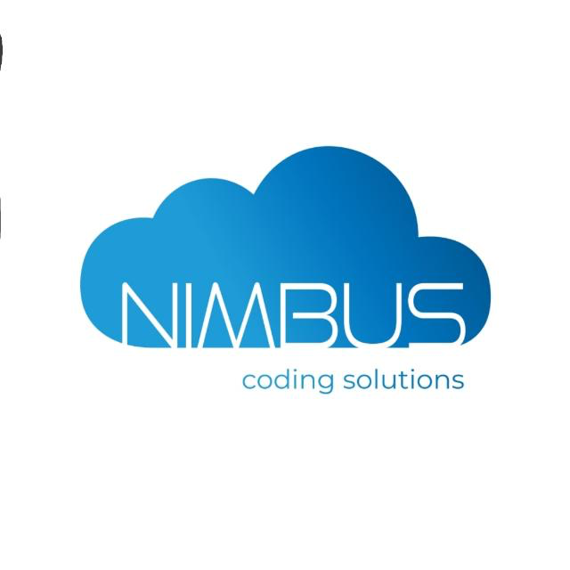

Bachelor of science in Digital Systems and Robotics
Expected graduation in December 2021
GPA 83/100
EXPERIENCE
DevOps Engineer
Nimbus Coding Solutions

Puebla, Mexico
March 2021 - Today
Co-founder and partner. Responsible for creating and constantly upgrading the CI/CD pipeline of multiple projects by using Jenkins.
Automatization of processes through bash scripting.
Responsible for containerization of projects with Docker in order to deploy to AWS.
Fullstack Developer
SANIVER
Puebla, Mexico
June 2020 - Today
Worked with a team to design and deploy a Web Platform to manage all internal operations using Django Rest Framework in the backend for the API, React for the frontend, Redux for managing the state, Bootstrap and Sass for styles, and PostgreSQL as database.
Before the creation of the Web Platform, all registers where handmade and kept in binders.
Deployed in AWS EC2 using Docker and Nginx. Database deployed in RDS.
MAJOR PROJECTS
Neuralock
DL / IoT solution that detects if a subject is using a face mask in order to open an intelligent lock
Responsible for deploying a Deep Learning model and the Flask REST API with Gunicorn inside a Docker container to a GCP compute engine instance.
A Raspberry Pi with a camera was capturing video in realtime and then sending the video frames to the Deep Learning model through our REST API, then the model evaluated if the subject was using or not a face mask and then the API responded with the decision of the DL model in a JSON object. After that, the Raspberry Pi sends the JSON object to a NodeMCU who is responsible for locking/unlocking the door.
RaspG
Automatic watering system made with Arduino and Raspberry Pi
Data was collected from different sensors and processed by an Arduino. A DC water pump was activated when soil humidity dropped.
All the data was send to a Raspberry Pi through I2C protocol. A Python backend was in charge of receiving the data sent from the Arduino and displaying the data of the sensors in a 0.94’’ OLED display.
NodeJS backend was responsible for showing the data captured by the sensors in a GUI created with ElectronJS and in a WIA dashboard through their SDK (wia.io).